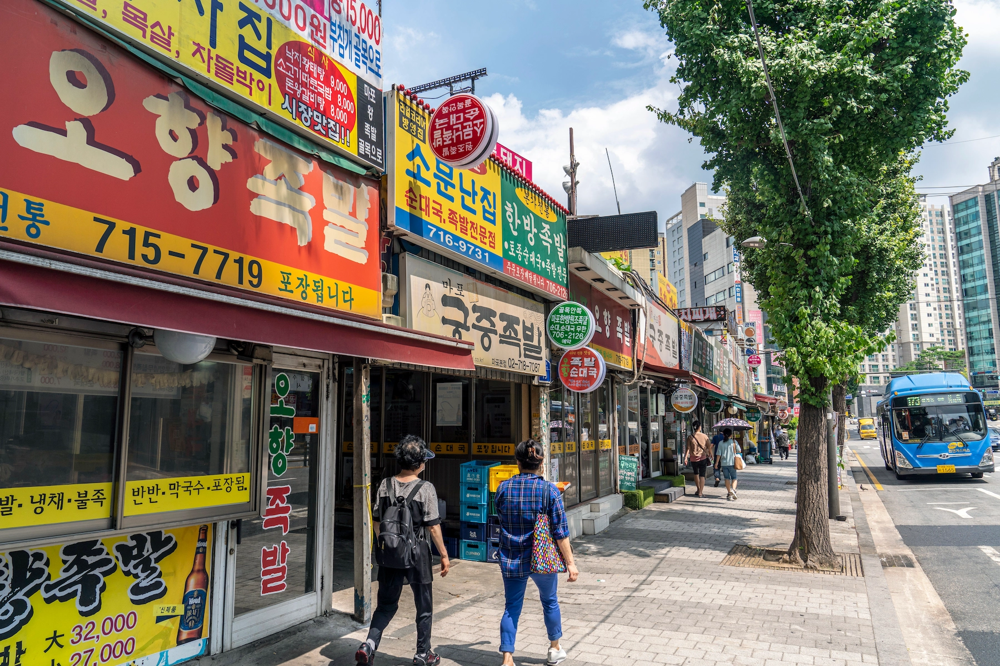
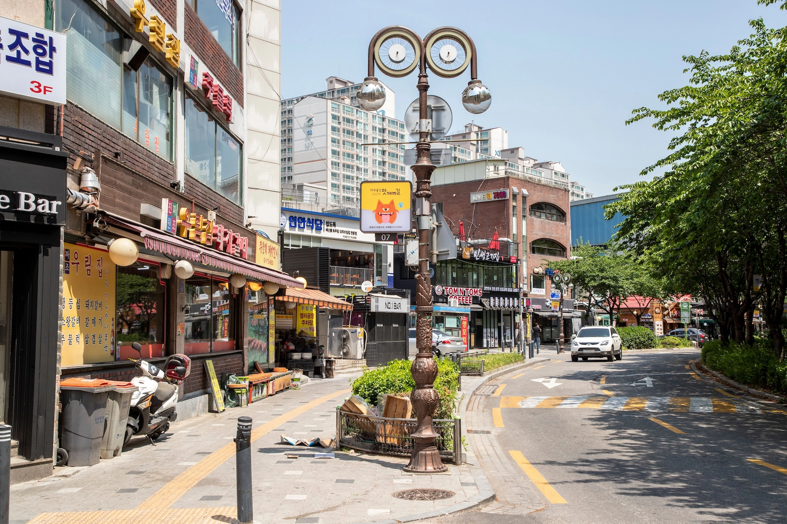
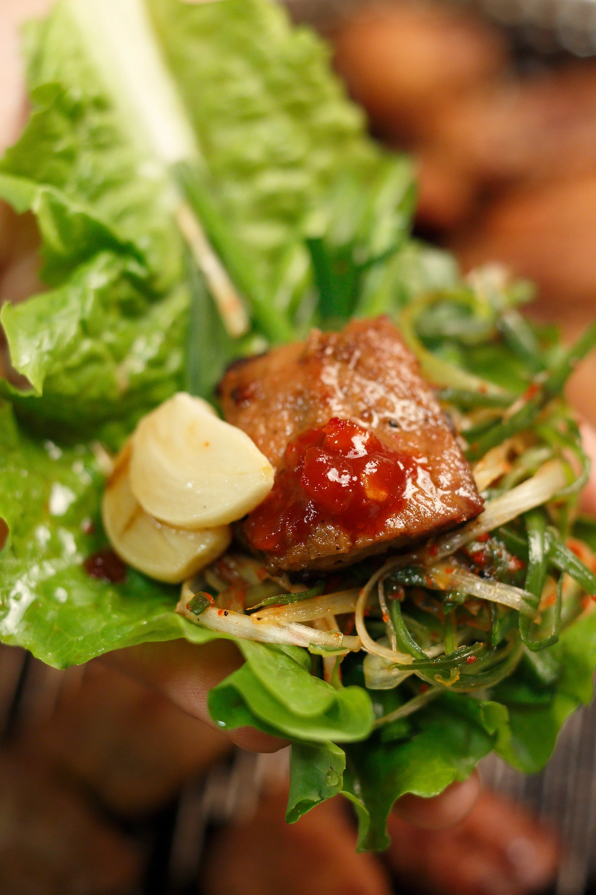
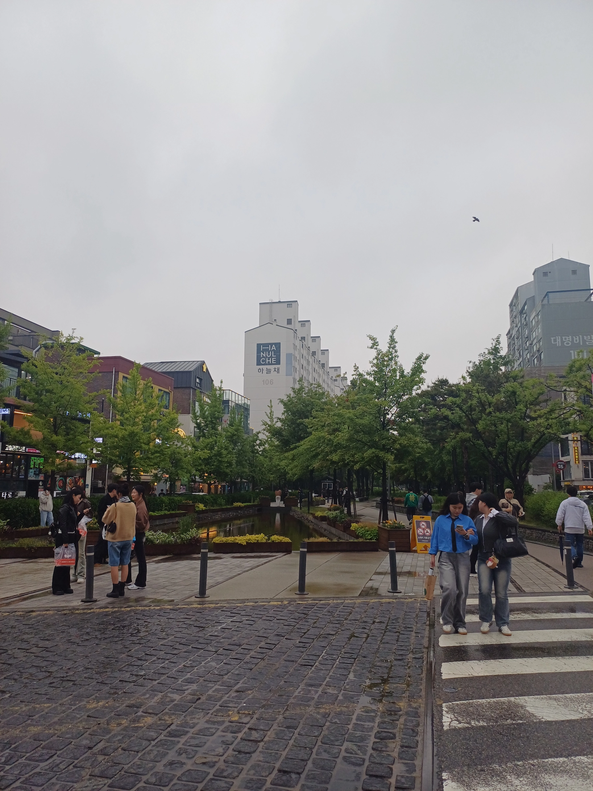

第一次來首爾，孔德值得去嗎？
可以值得，但不是每位初訪旅客都必須去。
旅程短，而且還想看宮殿、明洞、弘大或其他主要區域時，孔德可以等下次。
美食、在地街區或已預約的體驗本來就在計畫中時，這裡就更值得安排。

為一頓在地餐點或一項動手體驗而來，再留下度過與首爾主要觀光區很不同的夜晚。
孔德與附近麻浦美食街，不是拿著知名景點清單逐一打卡的地方。
有明確理由時，這裡才更值得來：逛吃孔德市場、吃一頓老派麻浦晚餐、參加韓式料理或甜點體驗，或只是想在以首爾日常生活為主、而非觀光的地方過一個晚上。
這也代表孔德不是必去。如果只有兩三天在首爾，還有宮殿、明洞、弘大或其他主要區域想去，可以略過，不必覺得漏掉了重要地標。
但如果美食是旅程的一部分、已經在附近預約體驗，或想看看首爾較不以觀光客為主的一面，孔德與麻浦就有意思得多。
重點不是多看景點，而是串起一頓好的在地餐點、一件值得做的事，以及悠閒的首爾夜晚，不必每一站之間都橫越城市。
孔德市場提供了明確起點。豬腳巷與煎餅巷不是為遊客打造的展示景點，而是持續運作的飲食區，大家下班後來吃飯、喝酒、聚會。
再往麻浦站與龍江洞走，飲食特色會改變，而不是消失。豬肋排烤肉、雪濃湯、冷麵與老字號社區餐廳，讓首爾這一側有別於弘大的年輕文化、明洞的購物街。
對旅客尤其實用的是， 有些首爾體驗活動，就在這裡進行。市場美食體驗、韓式甜點課或身心保養預約，可能在你還沒想過逛孔德前，就先把你帶到這裡。
本指南就從這裡開始。
Korea Inside 不把活動當成孤立的預約，而是串連周邊街區： 活動前後吃什麼、是否真的需要付費導覽、晚餐後去哪裡散步，以及孔德適合只待幾小時，還是當住宿據點。
第一次到這一帶，孔德市場最容易讓你理解大家為什麼來。
市場最知名的是兩條美食巷： 豬腳 與 韓式煎餅。
韓式豬腳是滷製豬蹄，通常以大盤分享，而不是單人餐。更適合兩人以上，尤其同行的人想搭配酒飲、吃一頓豐盛晚餐時。
韓式煎餅比較容易少量品嚐。不必一次點一道大份餐點，可以選幾種煎製或裹粉料理，組成綜合拼盤。依攤位不同，可能有蔬菜、肉類、海鮮與其他食材。
對旅客來說，兩條巷子因此各有用途。
晚餐本身就是重點時，選豬腳。
想吃幾種口味、搭配飲品，之後繼續晚間行程時，選煎餅。
不必因為兩者就在隔壁，就覺得都要吃。在市場好好吃一餐，再繼續逛孔德或麻浦就夠。
不一定。
如果你能自在走進韓國市場、指著食物點餐，也願意克服一點語言障礙，在孔德市場自己探索，本身就是體驗。
希望有人介紹正在吃什麼、協助點餐，或把市場造訪變成有安排的活動，而不只是晚餐時，導覽或可預約的美食體驗才更有幫助。
這個差別很重要。
付費不是因為沒有導遊就進不了市場，而是為了 背景介紹、溝通協助與更有安排的體驗。
目前有以孔德煎餅巷與韓國傳統酒為主的可預約體驗。如果這比獨自摸索市場更有價值，就很適合放在晚間行程開頭。
孔德市場是明確的起點，但不是全部的飲食故事。
往麻浦站與龍江洞一側移動，特色從市場美食轉為 老字號內用餐廳、豬肋排烤肉，以及在這個街區已存在數十年的料理。首爾官方觀光資料也把龍江美食區與孔德豬橫膈膜烤肉、市場一帶連在一起，因此這是真實的在地飲食路線，不是 Korea Inside 憑空創造。
錯誤是想一個晚上全部吃完。
先選真正想吃的那一餐，再以它安排其餘晚間行程。

Original Jobak House 是認識麻浦豬肋排烤肉特色的實用起點。這家店自 1979 年營業，以醃製豬肋排聞名；店家自有酒飲 Chopaju 也讓用餐連結到當地馬格利酒文化。它靠近麻浦站，不在孔德市場裡。
想讓烤肉晚餐本身成為主要體驗時，再來這裡。
如果已在孔德市場吃完整盤豬腳或好幾輪煎餅，就沒什麼理由只為了說也吃過麻浦烤肉，而再硬吃一大餐。
更好的安排，是選擇 市場美食或豬肋排烤肉作為主要晚餐，不必兩種都吃。

Mapo-ok 呈現這一帶另一種歷史。這家餐廳自 1949 年便與麻浦相連，以乳白牛骨湯「雪濃湯」聞名，和韓式烤肉晚餐很不同。
想簡單坐下吃一餐，而不是以烤肉和酒飲安排整晚時，這可能更合適。
這也說明，麻浦不該被簡化成「豬肋排烤肉街區」。這裡的老飲食文化，不只有一道料理。
Eulmildae 也是這個飲食區的老字號，以平壤式冷麵聞名。
這正是不應被寫成人人必吃的地方。連 Visit Seoul 都提到，它清淡的麵食風格並非每個人都喜歡。
如果本來就對細緻、不重口味的平壤冷麵好奇，這會是有意義的一站。
如果期待甜、辣或調味濃重的韓式麵食，只因店家有名而選它，可能會吃錯晚餐。
孔德與麻浦的優點是 選擇多，不是能吃完多少家餐廳。
實際可行的一晚，可能是：
在孔德市場吃煎餅、喝點酒，
或 以豬腳當主要晚餐，
或 在麻浦站附近吃豬肋排烤肉，
或 吃雪濃湯或冷麵等老首爾料理。
然後做點別的。
這些「別的事情」，正是孔德比餐廳清單更有意思的地方： 喝一杯、上一堂手作課、散一小段步，或其他在地體驗，都能自然串在飲食停留之間，不必讓一晚變成連吃四餐。
孔德與麻浦最好玩的方式，不是把餐廳一家接一家排下去。
一堂課、短暫手作或好好休息，能讓行程更有層次，尤其原本就是為活動而來時。
真正該問的不是：
「還能預約什麼？」
而是：
「在原本想吃的那一餐前後，什麼安排最自然？」
韓式甜點課特別適合這一帶，因為它讓你有理由在晚餐人潮前抵達，而不是只來吃飯。
孔德附近目前可預約的課程，包括以英文進行的韓國傳統甜點製作體驗。
以下情況會更合適：
如果當天大部分時間已經都在吃東西，這就比較沒必要。
甜點課後再吃煎餅、豬腳與豬肋排，很快就會變成食物太多，而不是體驗更好。
更俐落的組合是：
甜點課 → 散步 → 一頓好好吃的在地晚餐
不必把課程當成美食清單上另一個待完成項目。
對韓國傳統酒有興趣的話，還有另一種適合孔德—麻浦路線的體驗，不必再多吃一整餐。
Chowol 是位於麻浦站與孔德站之間的城市馬格利酒釀造所。可以進去品飲，也有預約制品飲體驗。
這更適合放在晚餐前後短暫停留，不必變成占據整晚的另一項活動。
旅程不安排酒飲就略過。以它安排其餘晚上行程前，先確認目前品飲選項。
孔德不是每項體驗都需要吃東西。
附近也有小型手作工作坊，包括工藝與製皂體驗。
晚餐已經很豐盛時，這些更合適。
例如：
工作坊 → 短暫散步 → 豬肋排烤肉晚餐
通常比以下安排更均衡：
料理課 → 市場試吃 → 烤肉晚餐。
情侶、朋友或家庭想一起做點事，又不想把整個下午交給大型景點時，這類活動也很實用。
別只因就在附近就預約。它占掉了原本想留給美食與散步的時間，應該真的值得。
頭皮護理和再加一站美食或全身按摩不同。如果韓系美妝本來就是首爾計畫的一部分，也想把孔德安排成預約服務加晚餐，才更合適。
JUNO HAIR Mapo Harrington 靠近孔德站，可以接在晚餐前，不用先橫越首爾。
別只是為了填時間而加。頭髮與頭皮療程占用固定預約時段，訂之前先查目前方案與所需時間。
孔德與麻浦也有可預約的按摩與身心保養選項。
一整天移動很多之後，這些特別適合當結尾；孔德從首爾多個地方都容易抵達，也自然適合回飯店前停一下。
但水療預約會改變整晚的性質。
如果專程來探索市場與老美食街，在晚餐時段中間預約長療程，可能會把街區體驗切成兩半。
通常更好的順序是：
在地晚餐 → 短暫散步 → 水療或按摩 → 回飯店
不必把療程當成這次造訪的核心。
以下情況可以考慮：
以下情況可以略過：
如果主要是想舒緩走了一整天首爾後疲倦的腳與腿，不一定需要較完整的水療方案。
HANOI Foot & Body SPA 靠近孔德站。如果你更在意按摩，而不是高級水療環境，這裡比較適合當單純的休息恢復一站。
預訂前確認目前療程長度，避免把晚餐或趕末班車的時間推得比原本更晚。
這一帶可預約的體驗很多，容易讓人誤判需要安排多少。
同一次造訪，不需要市場導覽、甜點課、工作坊與水療全排。
對多數旅客來說， 一項體驗，加一頓好的餐點 就足以讓孔德與麻浦成為旅程中充實的一部分。
這也正是這一帶和大型景點區不同的地方。
你不是來把它全部逛完。
而是好好享受適合自己的部分。
吃過豐盛的市場餐點或豬肋排烤肉後，在孔德放慢步調更好。
這座 京義線森林公園 就提供了轉換的空間。孔德這一段，重點比較不是看地標，而是有地方走走、聊天、消化一下，再決定晚上是否結束。
這也是孔德和弘大感覺不同的地方。
弘大晚上的活力圍繞購物街、街頭表演、酒吧與人潮。孔德較安靜，也更偏向日常需求。上班族正吃完晚餐，社區咖啡廳還開著，街道更像居民下班後實際使用的地方，而不是圍繞遊客打造的夜生活區。
這種較安靜的節奏，也是造訪理由之一。

如果晚上的主要目的是酒吧與深夜活動，孔德無法取代弘大、梨泰院或乙支路。
這裡可以喝酒，美食街也自然適合飯後小酌，但吸引力在於 這一餐，以及圍繞它的在地夜晚，不是一長串值得專程造訪的酒吧。
晚餐後想繼續更熱鬧的夜晚，孔德的交通連結方便你前往別處。
如果一頓好飯、散步與安靜收尾就讓你滿足，也不用只因這裡不以夜生活聞名就離開。
第一次來，實際上不需要很多站。
選項 1 — 市場之夜
孔德市場
→ 煎餅或豬腳
→ 想喝就喝點酒
→ 在森林公園一帶短暫散步
→ 咖啡廳或回飯店
選項 2 — 麻浦晚餐
抵達麻浦或孔德附近
→ 豬肋排烤肉、雪濃湯或其他老社區料理
→ 往孔德一側走
→ 甜點、咖啡廳或一項小體驗
→ 結束晚間行程
選項 3 — 先體驗
甜點課或其他已預約活動
→ 好好吃一頓晚餐
→ 在街區短暫散步
→ 水療、咖啡廳或飯店
重點不是精確的順序。
而是避免為了把每條美食巷、每家餐廳與每項活動都塞進一次造訪，結果反覆穿越同一區。
對多數旅客來說， 第一次來，幾小時或一個晚上就足夠。
不必把孔德排成一整天的觀光行程。
以下情況可以多留時間：
以下情況可以短一點：
這就是孔德與麻浦的優點。
可以把這裡當成整晚的目的地，也能讓一頓好飯或一項體驗，帶你認識這一帶。
比起一整天觀光，孔德可能更適合當住宿地點。
原因是交通。
孔德站直接連結 AREX 與首爾地鐵 5、6 號線，適合往返機場，也方便在首爾西部與市中心之間移動。車站附近有幾家飯店，想要可靠的交通，又不想住在弘大或明洞最熱鬧處時，這裡尤其實用。
但交通好，不代表孔德自動適合每趟旅行。
以下情況值得考慮孔德：
對這類旅客，孔德可以是實用據點，回來吃晚餐時也仍有事可做。
回到的不是空蕩蕩的交通轉運點。
而是有市場、老餐廳與下班飲食文化的街區。
機場方便很有用，但不該替你決定整個住宿選擇。
第一次來首爾，只有兩三天觀光時，住得更靠近每天早上要去的地方，可能比靠機場鐵路更省時間。
以下情況，孔德也較不合適：
這時，弘大、明洞或其他區域可能更符合旅程。
當你實際用得上 交通、美食與較安靜的住宿環境 這些優點時，孔德才最合適。
別只看「孔德站附近」。
選這裡的飯店時，確認：
兩家都標榜「孔德站附近」的飯店，拖著行李時感受到的差別，可能比看地圖時更大。
孔德與麻浦不是每個第一次來首爾的人，都必須硬排進去的街區。
它們的價值，很大程度取決於 你的旅遊方式。
當吃飯不只是景點之間的休息，孔德與麻浦最有意義。
如果願意花時間在市場餐點、豬肋排烤肉、老社區餐廳或動手做的美食體驗之間選擇，也樂於讓用餐本身成為當晚主角之一，就來這裡。
這是值得專程到這一帶最明確的理由之一。
這一帶適合喜歡看首爾主要觀光區之外日常面貌的旅客。
會看到通勤者下班、社區餐廳晚餐時坐滿，街道熱鬧卻不像專門的觀光區。
這不代表孔德比弘大或明洞「更好」。
而是想要不同的夜晚時，這裡很有用。
再次造訪的旅客，更有餘裕欣賞孔德與麻浦。
如果已看過宮殿、明洞、弘大與市中心主要景點，以在地美食、課程或街區散步安排一晚，就能為旅程加入確實不同的內容。
對這類旅客來說，孔德比在排得很滿的初訪行程中更值得安排。
獨旅者逛市場、咖啡廳、上課與散步，通常不難。
主要限制在吃飯。
有些料理，尤其豬腳或韓式烤肉等大份分享餐，兩人以上比較容易點。
一個人旅行時，要仔細選餐廳，或透過課程、市場品嚐、小份餐點，避免點下遠超過食量的食物。
這可能是最容易享受孔德與麻浦的同行組合。
一堂課、逛一下市場、好好吃晚餐，再散一小段步，不需複雜行程就能度過一晚。
同行的人比起觀光或夜店，更想吃飯聊天時，這一帶也很合適。
家庭可以逛市場、參加料理體驗或輕鬆吃飯，但孔德不是大型親子景點區。
比起一家接一家吃餐廳，小小孩可能更喜歡短暫手作課或市場造訪。
如果 Lotte World、博物館或主要親子景點已占去大半天，就沒理由為了晚上再加孔德，拉著疲倦的孩子橫越首爾。
如果只有兩三天在首爾，孔德與麻浦通常不該取代你專程來韓國想看的體驗。
其他地方也吃得到好的韓國料理。
其他地方也找得到市場與咖啡廳。
值得來這裡的理由，是這種 組合：在地美食、實用體驗，以及沒有太多知名景點分散注意力的街區夜晚。
行程有足夠空間時，這種組合就更有價值。
如果想要夜店、深夜酒吧、街頭表演與街道活力，弘大或梨泰院通常更合理。
孔德有很多吃喝的地方，但不應被描述成隱藏版夜生活區。
為晚餐與在地夜晚而來。
如果夜生活本身才是主要目的，就去別處。
想要以下組合，就選孔德與麻浦：
在地美食
＋一項值得的體驗
＋悠閒的首爾夜晚。
需要以下內容時，就略過：
主要景點
＋熱鬧夜生活
＋排得緊密的初訪行程。
這就是取捨。
孔德與麻浦不需要和首爾知名街區競爭。
它們的價值，在於提供不同的內容。
孔德與麻浦最好安排的方式，是當天有 一個明確主軸。
主軸可以是預約課程、孔德市場，或一頓好好吃的麻浦晚餐。圍繞它安排，不必把指南提到的每家餐廳、每項活動都走完。
接近傍晚到孔德，在夜色太深之前，先從市場一帶開始。
先看看煎餅與豬腳巷，決定市場是晚餐，還是晚間行程的開頭。
選煎餅的話，其餘飲食安排就輕一些。一盤綜合煎餅加酒飲，就可能已是一餐。
選豬腳，就把它當晚餐，不是另一頓大餐前的開胃菜。
吃完後，往京義線森林公園一帶走，放慢晚上節奏。咖啡廳、甜點或短暫喝一杯，比立刻找下一家名店更合適。
如果還想看看麻浦站一側，就透過散步認識街區，不必硬塞第二頓晚餐。
課程讓下午有更明確的安排。
活動結束，短暫休息後，再選 一頓與剛才體驗不同的晚餐。
例如甜點製作課後，豬肋排烤肉或鹹食市場晚餐，比再吃甜點更均衡。
市場美食體驗後，就別再加另一場美食導覽，把剩下時間留給散步、咖啡廳或身心保養預約。
預約應該是認識街區的起點，不該吃掉來這裡的全部意義。
從靠近麻浦站或龍江洞的一側開始。
留足夠時間吃烤肉，不必為了之後趕孔德市場而匆匆吃完。
晚餐結束，想安靜散步、喝咖啡或最後小酌，再往孔德走。
用餐本身就是造訪原因時，這個方向尤其順。
地圖上的孔德與麻浦夠集中，很容易讓人想一直加站。
但這不是實用的規劃方式。
餐廳要候位、課程有固定開始時間、韓式烤肉不是十分鐘能吃完，市場食物也可能比想像更有份量。
安排 一項體驗、一頓正餐，之後再接一個輕鬆的停留，通常比匆匆趕六個收藏地點更充實。
如果有什麼意外成為當晚亮點，就多待一點。
這條路線終點，沒有非得在關門前趕到的重要古蹟。
這份彈性，也是孔德與麻浦適合這樣逛的原因。
第一次來，最簡單的版本是：
一項體驗或孔德市場 → 一頓好的在地晚餐 → 一段散步或安靜的晚間停留。
大致最多留半天。
離開時還想下次回來吃這次略過的餐廳，就表示街區已經發揮魅力。
孔德與麻浦都容易抵達，但不是同一站，也不完全服務相同的目的。
對多數第一次來的旅客， 孔德站是較容易的起點。
它連結 AREX、5 號線、6 號線與京義中央線，是首爾西部較實用的交通轉運站之一。
晚上從孔德市場、車站附近的課程開始，或從仁川機場過來時，就從這裡出發。
想安排以下內容，孔德站更適合作為起點：
別只因本指南同時提到兩個名字，就一到孔德立刻趕往麻浦站。
孔德周邊本來就有足夠內容可以先逛。
如果主要目的是麻浦與龍江洞周邊的老餐廳區，麻浦站更合理。
豬肋排烤肉或某家老字號是當晚核心時，就從離餐廳較近的地方開始，不必硬從孔德出發。
之後晚上還有時間，再步行或移動到孔德。
孔德特別實用，因為 AREX 一般列車停靠本站。
這讓此區在兩種情況下很方便：
但如果落地時很累、班機延誤或帶大件行李，就別按預估抵達時間，排一整晚密集美食行程。
機場交通是優點，不是把抵達日排得複雜的理由。
直接從機場來，或剛從飯店退房，就先處理行李。
別以為靠近孔德站，就代表站內每條路線拖行李都同樣容易。
實際出口、電梯動線與最後一段步行都很重要。
住附近，先把行李放飯店，再逛市場或上課。
只是路過，安排整晚之前先查寄放選項。
簡單路線通常比來回折返更容易。
例如：
孔德站
→ 市場或預約體驗
→ 在地晚餐
→ 往麻浦或森林公園一側散步
→ 結束晚間行程
或
麻浦站
→ 豬肋排烤肉或老社區餐廳
→ 往孔德走
→ 咖啡廳、小酌或安靜收尾
→ 孔德站搭車回住宿處
依最重要的那一件事選方向。
這個街區不需要複雜的交通策略。
孔德與麻浦不難玩，但把它當成 真正的街區夜晚，而不是觀光清單，會更好。
豬腳、煎餅、豬肋排與其他在地特色料理，都可能是一頓份量充足的餐。
一晚塞進好幾種，通常是食物變多，而不是體驗變好。
選一頓主要餐點，其他安排圍繞它就好。
這一帶有些代表食物，比起獨自吃，更適合分享。
獨旅者點大份分享餐前，應先看份量。市場品嚐、小份餐點或課程，可能比一整套多人晚餐更合適。
點餐、付款與座位安排，可能因店家不同。
有些地方對旅客很直覺，有些可能要多用手指、簡單韓語或耐心。
這些小阻礙是日常市場的一部分，不一定是需要「修好」的問題。
想要解說與點餐協助時，市場導覽體驗就更有用。
料理課、市場體驗或水療預約，都有固定開始時間。
別在緊接之前安排可能等很久的餐廳。
留足夠時間找集合點，尤其第一次在孔德站找路時。
兩者近到可以串在一起，但起點不同。
從最重要的晚間安排附近開始：
孔德 適合市場與許多附近體驗。
麻浦 適合龍江洞飲食區與豬肋排烤肉晚餐。
接著往同一方向移動，不要反覆來回。
AREX 連結讓孔德適合往返機場。
但不代表長途飛行後，就一定適合長時間吃市場晚餐、上課再晚間散步。
很累或帶大件行李時，先辦入住。
把街區留到真正能享受的時候。
孔德的價值，不是暗藏比知名區域更熱鬧的夜生活或更多景點。
它的優點不同：
在地美食、實用體驗，以及較不圍繞觀光客安排的夜晚。
如果期待購物街、街頭表演與深夜夜店活力，可能只是選錯街區。
任何課程、美食體驗、水療或其他活動，都要確認目前的：
接著把預約串進街區行程，不要圍著預訂頁面排整晚。
好的孔德夜晚安排，即使關掉聯盟連結分頁，也應該仍然合理。
可以值得，但不是每位初訪旅客都必須去。
旅程短，而且還想看宮殿、明洞、弘大或其他主要區域時，孔德可以等下次。
美食、在地街區或已預約的體驗本來就在計畫中時，這裡就更值得安排。
對旅客而言，最值得認識孔德的理由，是市場美食、豬腳與煎餅巷、附近的豬橫膈膜烤肉與麻浦老美食街、實用的交通連結，以及車站周邊越來越多的手作體驗。
它不是大型觀光景點區。
想以煎餅或豬腳等食物，度過較隨興的市場之夜，就選孔德市場。
想坐下吃豬肋排烤肉，或去這一帶的老社區餐廳，就選麻浦與龍江洞一側。
不必同一晚兩邊都吃。
可以。
散步、咖啡廳、課程與許多市場體驗，都容易獨自安排。
主要限制是食物：一些名菜原本是多人分享，一個人點可能大得沒必要。
對多數旅客， 幾小時或一個晚上就夠。
只有預約了課程、想慢慢以美食為主逛，或住在當地時，再多留時間。
適合晚餐與小酌，但不是首爾主要夜生活區之一。
如果夜店、街頭表演或深夜跑酒吧才是主要目的，弘大或梨泰院通常更合適。
方便，AREX 一般列車停靠孔德站。
對住附近，或把這裡當首爾西部交通據點的旅客，尤其實用。
機場便利仍應和主要觀光時間會花在哪裡一起衡量。
不需要。
可以自己逛孔德市場，在周邊吃飯。
想要解說、語言協助、有安排的活動或手作課，而不只是吃一餐時，付費體驗更有用。
如果重視 AREX、5 號線與 6 號線、在地餐廳，以及較安靜的晚間環境，孔德會是很合適的選擇。
想要飯店門外立刻就有主要景點或夜生活時，就較不合適。
不該只因指南說有十個著名景點，就把孔德與麻浦加進首爾行程。
當 造訪理由本身很明確時，再來。
也許你想在孔德市場吃一餐。
也許麻浦豬肋排烤肉，是你在意的晚餐。
也許一堂韓式甜點課、美食體驗或身心保養預約，剛好把你帶到這裡。
也許只是想有一個晚上，不像在觀光，而像待在居民每天使用的街區。
第一次來，計畫簡單一點：
一項值得的體驗或市場停留 → 一頓好的在地餐點 → 一個悠閒的結尾。
這樣就夠。
如果喜歡這裡，比起把清單上每家餐廳、每項活動都完成，你會帶著更好的理由想再回來。
孔德與麻浦不是首爾必去，而是當你不再想讓每小時都圍著知名景點轉時，開始懂得欣賞的首爾。